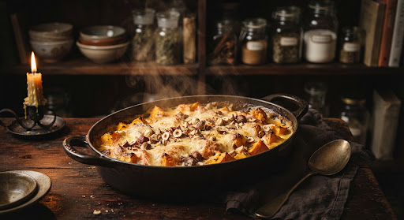

Formule culinaire et annotations scellées exclusivement sur cet appareil. Consultation intégrale hors-ligne sans connexion requise.

Gratin de potimarron rôti, noisettes & châtaignes
« Douceur automnale au parmesan affiné 24 mois, crème d'Isigny onctueuse et croquant de noisettes torréfiées sur lit de braises. »
balance Les proportions ci-dessous s'adaptent instantanément pour éviter tout gaspillage.
Préparation du potimarron
schedule 10 minBrossez soigneusement le potimarron sous l'eau tiède. Ne l'épluchez point : sa peau fine fondra à la cuisson et enrichira le mets d'une saveur noisettée. Évidez les pépins puis détaillez la chair en cubes réguliers d'environ 2 centimètres.
Pré-cuisson alchimique
schedule 12 minDans une cocotte chaude avec un filet d'huile d'olive, faites revenir les cubes de potimarron à feu doux pendant 10 minutes avec l'ail écrasé, jusqu'à ce qu'ils soient légèrement dorés mais encore fermes à cœur.
Placer les dés dans le bol. Ajouter 500g d'eau dans le fond de cuve, installer le Varoma ou programmer : 15 min / 100°C / Vitesse 1 / Sens Inverse pour attendrir la chair tout en gardant des morceaux entiers.
Liaison de crème & épices
schedule 5 minDans un bol en grès, fouettez la crème d'Isigny avec la pulpe d'ail confite, la muscade fraîchement râpée, le poivre noir concassé et la moitié du parmesan affiné. Le mélange doit être velouté et parfumé.
Dressage & croquant boisé
schedule 5 minFrottez votre plat de cuisson d'une gousse d'ail coupée. Déposez les cubes de potimarron, parsemez des éclats de châtaignes cuites, puis nappez de la préparation crémeuse. Saupoudrez enfin du reste de parmesan et des noisettes torréfiées.
Enfournement au feu d'or
local_fire_department 25 minGlissez le plat au four préchauffé à 190°C à mi-hauteur. Laissez bouillonner et gratiner jusqu'à obtention d'une croûte noisette ambrée et croustillante. Laissez reposer 5 minutes avant de convier les hôtes à table.